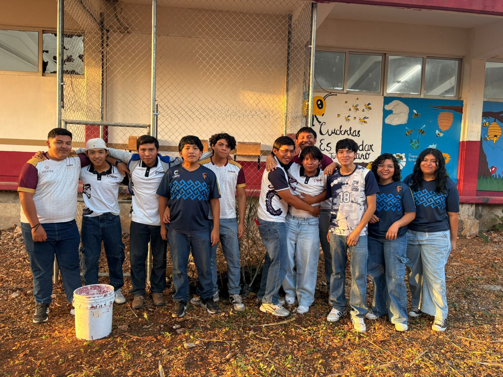

La Abeja melipona es una abeja sin aguijón que ha sido criada desde tiempos antiguos por culturas como los mayas en la región de Yucatán. Los mayas la consideraban sagrada y la utilizaban para obtener miel con propiedades medicinales. Actualmente, su crianza se conoce como meliponicultura.
La Abeja melipona es una abeja sin aguijón que ha sido criada desde tiempos antiguos por culturas como los mayas en la región de Yucatán. Los mayas la consideraban sagrada y la utilizaban para obtener miel con propiedades medicinales. Actualmente, su crianza se conoce como meliponicultura.
Día lunes – Alimentación Se coloca un pequeño recipiente con jarabe de azúcar o miel diluida cerca del meliponario. Las abejas obreras salen, detectan el alimento con sus antenas y comienzan a recolectarlo con su probóscide (lengua). Después, regresan a la colmena donde comparten el alimento con otras abejas y lo almacenan en pequeñas celdas. Día jueves – Hidratación Se coloca agua limpia en un recipiente poco profundo. Las abejas llegan, beben pequeñas cantidades y también llevan agua a la colmena. El agua sirve para regular la temperatura y humedad dentro del nido. Proceso general 1. Las abejas detectan alimento o agua. 2. Salen de la colmena a buscarlo. 3. Recolectan y transportan el recurso. 4. Regresan y lo comparten con la colonia. 5. Se almacena o se utiliza dentro del meliponario.